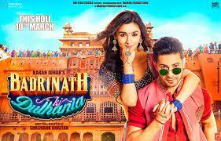

Badrinath Ki Dulhania is a 2017 Indian Hindi-language romantic comedy film written and directed by Shashank Khaitan and produced by Hiroo Yash Johar, Karan Johar and Apoorva Mehta under the Dharma Productions banner.[4] it is a spiritual sequel to the 2014 film Humpty Sharma Ki Dulhania, it stars Varun Dhawan and Alia Bhatt in the lead roles, and follows the story of an aspiring independent air hostess from rural India who refuses to conform to the patriarchal expectations of her chauvinistic fiancé. The film also features Aakanksha Singh, Rituraj Singh, Yash Sinha, Shweta Basu Prasad, Gaurav Pandey, Aparshakti Khurana, Sahil Vaid and Swanand Kirkire in supporting roles.